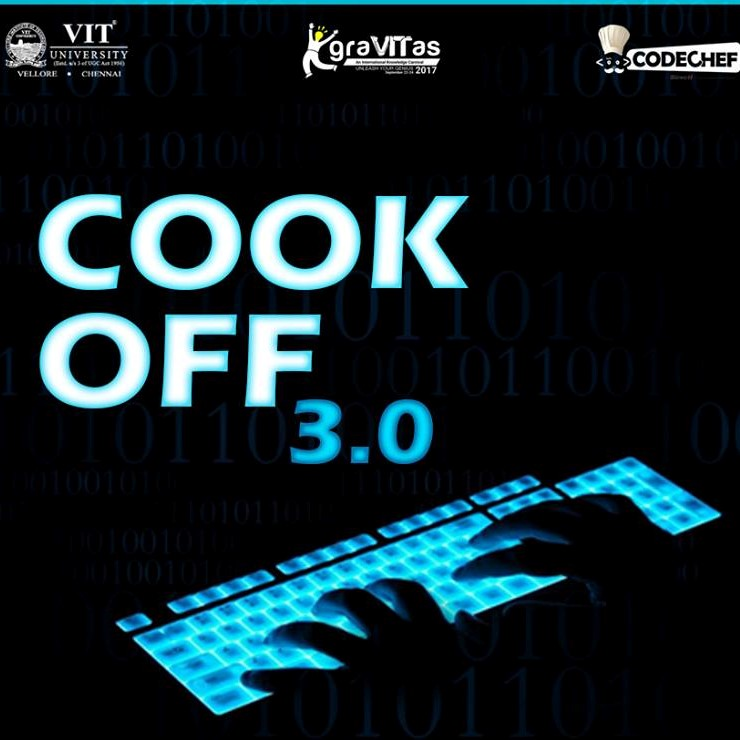

-

January 2017
Git and Github Workshop
This workshop covered the functionalities of GIT and later focussed on version control systems. The concept of file management was also taken up. This workshop attracted a large audience of 65 who were introduced to a Javascript based game known as ASTEROIDS and encouraged to work upon it later.
-
March 2017
Tech Blaze
It was a one of its kind technical debating event marking the start of a new journey, a new year. Participants were given two minutes to prepare for their topic chosen by drawing chits and the team’s motion was finalised by a toss. Logical comebacks were appreciated more than strong defending arguments.
-

April 2017
Code Combat
This event was a unique amalgamation of coding and gaming. Teams consisted of 2 coders and 1 gamer. In the gaming section gamers had bouts of counter strike GO while the coders had to code on Hackerrank. Scoring was done based on the cumulative scores of gamers and coders.
-

July 2017
Insight
An event especially for a CS and IT fresher. This would give them an insight into the various domains of Computer Science Engineering and its advancements.
-

September 2017
Cook Off 3.0
We conducted this successful coding event for the third time in VIT. A competitive coding event based on the speed and ability of a participant to complete a specific set of questions.
-

September 2017
Big Data Analytics
Data Analysis is considered to be the most trending fields in computer science including machine learning. Topics covered in the workshop were learning algorithms like regression, classification etc. There was also a hands on session using Python.
-